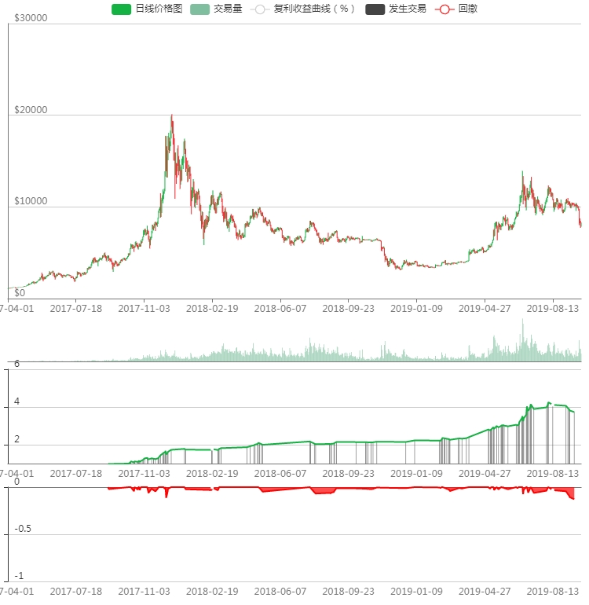

回测日期：2019-9-1
回测交易所：BITMEX
品种：XBTUSD
时间级别：5分钟
回测K线数：210244
复利收益曲线：1=初始仓位大小，2表示收益100%，依次类推; 回撤：-1表示亏损100%，爆仓

每次开仓是单位1个BTC
| 全部 | 做多 | 做空 | |
|---|---|---|---|
| 净利润 | $2855.20 | $2855.20 | $0.00 |
| 毛利润 | $58250.00 | $58250.00 | $0.00 |
| 毛亏损 | $-55394.80 | $-55394.80 | $0.00 |
| 最大回撤 | $-7417.50 | $-7417.50 | $0.00 |
| 盈利因子 | 1.0515427440842824 | 1.0515427440842824 | NaN |
| 最大持仓 | 100.00% | 100.00% | 0.00% |
| 所有已平仓交易 | 521 | 521 | 0 |
| 获利交易次数 | 201 | 201 | 0 |
| 亏损交易次数 | 320 | 320 | 0 |
| 胜率 | 38.58% | 38.58% | NaN% |
| 平均交易 | $5.48 | $5.48 | $NaN |
| 平均盈利交易 | $289.80 | $289.80 | $NaN |
| 平均亏损交易 | $-173.11 | $-173.11 | $NaN |
| 全部交易的平均持仓K线根数 | 212.61228406909788 | 212.61228406909788 | NaN |
| 盈利交易的平均持仓K线根数 | 252.25870646766168 | 252.25870646766168 | NaN |
| 亏损交易的平均持仓K线根数 | 187.709375 | 187.709375 | NaN |